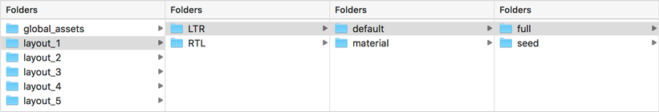
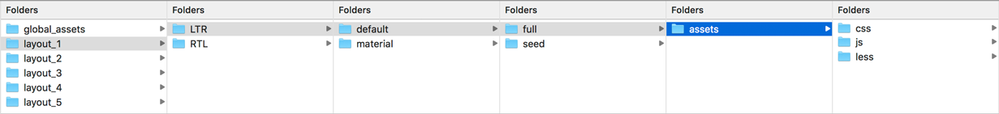
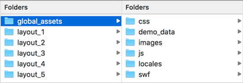
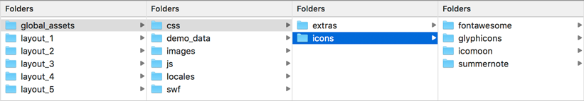
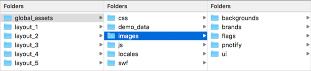
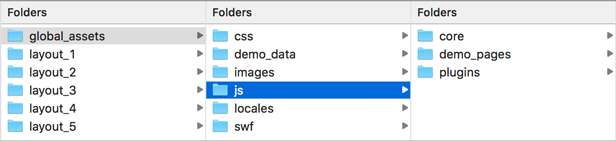
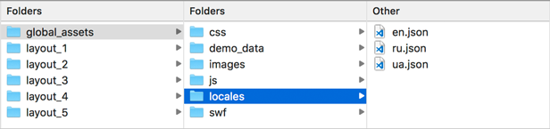
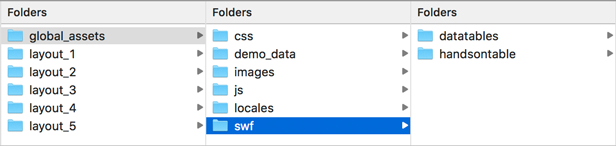

Limitless - Getting Started
Overview
Limitless template includes 4 layouts - 3 with vertical navigation and 1 with horizontal navigation. All layouts are placed inside 4 different folders with related name. Each layout contains main HTML files, all assets (LESS, CSS, JS, demo data, charts, maps etc etc) you can find in /assets/ folder. CKEditor folder must be in folder root, starters folder contains a set of blank pages with optional page layouts.
Screenshot
Dependencies
Limitless template has 2 dependencies: jQuery and Bootstrap libraries, all functinoality are based on these 2 libraries. Current jQuery library version used in the template - 2.1.4, Bootstrap version - 3.3.5. jQuery has dropped IE8 support in 2.0 version, so by default it is not supported. Limitless version with Bootstrap 4.0 will be included as a separate version on the template once it'll be available in first stable version. Main dependency paths are:
<!-- jQuery library -->
<script type="text/javascript" src="assets/js/core/libraries/jquery.min.js"></script>
<!-- Bootstrap library -->
<script type="text/javascript" src="assets/js/core/libraries/bootstrap.min.js"></script>
Files structure
Each layout includes a bunch of different files responsible for core and optional functionality. All files related to components and content are the same in all layouts: LESS files, plugins, extensions, libraries, charts, CSS files, files with demo data etc. Only layout parts are different in all layouts: sidebars, navbars, page header and breadcrumbs. To keep it simple, i've decided to change them, because in different layouts default look of breadcrumbs and page headers, as well as sidebars and navbar positions are different and you won't need to overload markup with additional classes. See the table below for more information about files included to the package:| What | Quantity | Description |
|---|---|---|
| Core files | ||
| Folders | 268 | Folders with files, excluding CKEditor and Starter kit folders |
| HTML files | 249 | Depending on layout, around 249 main HTML files in each layout |
| CSS files | 7 | 4 main CSS files, 2 CSS for icon fonts and 1 animate.min.css animation library |
| LESS files | 203 | All LESS files, including Bootstrap core |
| JS files | 896 | All JS files, excluding starter kit and CKEditor folders |
| Image files | 256 | Logos, flag icons and notification icons |
| Other files | ||
| JSON files | 23 | Different demo data sources. For demo purposes |
| CSV files | 11 | Mainly for charts based on D3.js library. For demo purposes |
| TSV files | 13 | Mainly for charts based on D3.js library. For demo purposes |
| SWF files | 3 | Additional files for datatables TableTools extension and Plupload file uploader |
Root folders
By default, Limitless includes HTML, LESS, compiled CSS, SWF, JS, JSON/TSV/CSV, fonts and image files. All these files are properly commented and placed inside separate folders, so if you know what you are looking for, it won't take too much time to find it. Template package root includes 3 main folders. Each folder includes related folders and files, that correspond to their purpose. Main folders are:
| Folder name | Description |
|---|---|
assets/ |
all template assets: LESS/CSS/JS files, fonts, images, demo data files etc. |
CKEditor/ |
open source web text editor, must be placed in the root |
starters/ |
starter kit for developers |
Screenshot
Global assets folder
Assets folder contains 6 sub folders, each folder includes a bunch of subfolders with related files. /demo_data and /locales are used for demo purposes only, they contain JSON/TSV/CSV files with demo data for multi level tree, maps, typeahead, file uploaders, wizards, charts and internationalization. Main subfolders are:
| Folder name | Description |
|---|---|
/css |
folder with compiled CSS files and icon fonts |
/demo_data |
all JSON/TSV/CSV files with remote data used in data tables, charts, dynamic trees etc. |
/images |
folder with images, doesn't include any demo images from live preview as it's not allowed |
/js |
all core libraries, extensions, plugins and separate page files are placed inside this folder |
/locales |
demo files with translations of main navigation, used in live preview for demo purposes only |
/swf |
a couple of swf files used in datatables TableTools extension |
Screenshot
CSS folder
Global assets folder contains CSS files that are shared across layouts - font files and styles, 3rd party extensions etc. Each layout also contains assets folder with layout specific CSS files. icons/ folder includes 3 icon sets, each set is inside separate folder. extras/ folder includes extra css files, such as animate.css library. Main structure:
| Folder name | Description |
|---|---|
/extras |
all existing and upcoming extra css files, such as animations and those that haven't been included to LESS |
/icons |
3 icon font sets: default Bootstrap Glyphicon icon font, Font Awesome and Icomoon. Icomoon is a main set used in all template layouts; Glyphicons is always included as it's inside compiled main BS file; Font Awesome is completely optional |
Screenshot
Demo data folder
Demo data folder includes all file types with remote data sets: JSON/TSV/CSV file types used in charts, maps, dynamic multi level tree, data tables, tag inputs, typeahead extension, multiple file uploader, form wizards. All these files are for demonstration purposes only. Child folders structure:
| Folder name | Description |
|---|---|
/alpaca |
Remote file with demo data set used by Alpaca form generator |
/d3 |
Majority of charts that are based on d3.js library use remote data sources. All of them are placed here |
/dashboard |
Dashboard charts - areas, heatmap, streamgraph, bullet charts. Also built with D3.js library |
/dimple |
Dimple charts. Single .tsv file used in all chart types |
/fancytree |
Dynamic multi level tree. Single JSON file contains multiple levels of data, used to build a file tree without markup |
/maps |
Demo data for vector maps |
/tables |
Data table demo data sources: simple JSON data source, nested object data and source with 2500 entries for scroller extension |
/tags_input |
JSON data source used in tags input plugin to fetch city names |
/typeahead |
Remote data sources for typeahead extension |
/uploader |
Empty JSON file required for Plupload uploader queue |
/wizard |
HTML files used as wizard steps in Stepy wizard |
Screenshot

Images folder
Images folder mostly needed for live preview to store brands and other demo images. But in the template package it doesn't have any of those, but only a set of flags for language switcher, colored icons for pnotify desktop notifications, custom map marker, jQuery UI datepicker trigger, logos, signature for invoice and background image for boxed layouts. Other images are moved according to Envato Market rules.
| Folder name | Description |
|---|---|
/backgrounds |
Background images on boxed layout in 1st and 2nd layouts only |
/flags |
Set of 16x16 flag icons set, includes 247 icon objects. Remove unnecessary if needed |
/pnotify |
5 images for demo purposes, used in PNotify library for desktop notifications |
/ui |
Other images. Currently contains 2 - custom marker for google maps and jQuery UI Datepicker component trigger image |
Screenshot
JS folder
JS folder includes all files responsible for template functionality - jQuery plugins, extensions, separate pages codes, core template functionality and libraries. Charts and maps folders are located in /demo_pages/ folder, because they are mostly used for demo purposes - demo charts, google and vector maps setup and can be easily removed. Layout assets folder doesn't include any shared JS files, but includes layout specific files only - app.js file which is used in all template pages and contains basic template functionality.
| Folder name | Description |
|---|---|
/core |
Core template files - libraries and main dependencies |
/demo_pages |
Almost all pages have different additional JS files loaded on top of app.js, with specific settings according to the page functionality |
/plugins |
All jQuery plugins and extensions in separate folders |
Screenshot
Locales folder
Locales folder contains 3 .json files with translations of main navigation. These files are added for demonstration purposes, so you'll be able to take them as a base. They can be combined into 1 main file with all languages inside, but i decided to divide them to make it more understandable. Please check Internationalization pages console to see how they load on the page.
Screenshot
SWF folder
Yes, unfortunately we have these files as well. SWF folder contains a couple of .swf files used in datatables library, TableTools extension. These files allow you save table data as CSV, XLS or PDF files. Please check datatable_extensions_tools.html file to see it in action. Although this extension was deprecated in the latest version of Datatables, i've decided to keep it. They offered an alternate extension, which will be added in upcoming update.
| Folder name | Description |
|---|---|
/datatables |
Datatables library TableTools extension |
Screenshot
assets/js/pages/ folder. So if you need a specific functionality that you found on some page, just go this folder and open necessary file. Each file is properly commented and structured. File list:
| File name | Description | |
|---|---|---|
| Main category | ||
index.html |
Template's main page | |
colors_*.html |
Set of pages with colored components and usage examples | |
changelog.html |
Version history | |
| Layouts | ||
layout_navbar_fixed.html |
Layout with fixed navbar | |
layout_navbar_hideable_sidebar.html |
Layout with hideable navbar and fixed sidebar | |
layout_navbar_hideable.html |
Layout with hideable navbar | |
layout_navbar_sidebar_fixed.html |
Fully fixed layout - navbar and sidebar are always sticky. With custom scrollbar | |
layout_sidebar_fixed_native.html |
Fully fixed layout with native scrollbar | |
layout_footer_fixed.html |
Layout with fixed footer | |
| Forms | ||
form_checkboxes_radios.html |
Checkboxes, radios and switchers | |
form_controls_extended.html |
Extended form controls | |
form_dual_listboxes.html |
Dual select boxes component | |
form_input_groups.html |
Input groups with options | |
form_inputs_basic.html |
Set of basic form inputs and controls | |
form_inputs_grid.html |
Optional grid of input fields | |
form_tag_inputs.html |
Tag inputs components | |
form_validation.html |
Form elements validation | |
form_bootstrap_select.html |
Bootstrap select component | |
form_multiselect.html |
Bootstrap single and multiple selects | |
form_select_box_it.html |
SelectBoxIt select component | |
form_select2.html |
Select2 single and multiple select component | |
form_layout_horizontal.html |
Horizontal form layout | |
form_layout_vertical.html |
Vertical form layout | |
| Wizards | ||
wizard_form.html |
Form wizard component with options | |
wizard_steps.html |
Steps wizard component with options | |
wizard_stepy.html |
Stepy wizard component with options | |
| Editors | ||
editor_ckeditor.html |
CKEditor text editor with options | |
editor_code.html |
Ace code editor with language options | |
editor_summernote.html |
Summernote text editor | |
editor_wysihtml5.html |
WYSIHTML5 editor | |
| Pickers | ||
picker_color.html |
Spectrum color picker with options | |
picker_date.html |
jQuery UI, daterange, pick-a-date, anytime date and time pickers | |
picker_location.html |
Location picker, with Google maps | |
| Components | ||
components_alerts.html |
Alert component with options and styling | |
components_animations.html |
CSS3 animations based on animate.css library |
|
components_breadcrumbs.html |
Breadcrumb component with placement, elements and styling options | |
components_buttons.html |
Available button styles | |
components_dropdowns.html |
Dropdown menu component with options | |
components_labels.html |
Labels and badges styling | |
components_loaders.html |
Progress bars, area and page loaders | |
components_media.html |
Media lists component with styling options | |
components_modals.html |
Modal dialogs with options and styling | |
components_navs.html |
Accordions, collapsible components and other navigation options | |
components_notifications_others.html |
jGrowl and Noty notification libraries | |
components_notifications_pnotify.html |
PNotify notification library | |
components_page_header.html |
Page header styling, components and other options | |
components_pagination.html |
Pagination and pager with options | |
components_pills.html |
Pills nav component with styling and other options | |
components_popups.html |
Tooltips, popovers with options | |
components_sliders.html |
jQuery UI and NoUI sliders with pips and other options | |
components_tabs.html |
Nav tabs component with different options | |
components_thumbnails.html |
Thumbnails with titles, descriptions and components | |
| Content appearance | ||
appearance_content_grid.html |
Main content grid with descriptions | |
appearance_content_panels.html |
Panel component with styling and color options | |
appearance_draggable_panels.html |
Draggable content panels | |
appearance_helpers.html |
Table with helper classes | |
appearance_panel_heading.html |
Panel heading components | |
appearance_syntax_highlighter.html |
Syntax highlighter extension with options | |
appearance_text_styling.html |
Table with available text styling | |
appearance_typography.html.html |
Template's typography - lists, headings, well blocks etc. | |
| Extra components | ||
extra_affix.html |
Bootstrap's Affix and Scrollspy components in action | |
extra_context_menu.html |
Context menu extension | |
extra_idle_timeout.html |
Idle timeout extension demo | |
extra_session_timeout.html |
Session timeout extension demo | |
extra_trees.html |
Dynamic multi level trees with available options | |
| Icons | ||
icons_fontawesome.html |
Font Awesome icon set demo | |
icons_glyphicons.html |
Bootstrap Glyphicons icon set demo | |
icons_icomoon.html |
Custom Icomoon icon set demo. Main icon set used in Limitless | |
| Sidebars | ||
sidebar_components.html |
Available components to use in sidebar | |
sidebar_hidden.html |
Page with hidden sidebar | |
sidebar_light.html |
Light sidebar version | |
sidebar_default_collapse.html |
Default sidebar collapsible | |
sidebar_default_hide.html |
Default sidebar hideable | |
sidebar_mini_collapse.html |
Mini sidebar collapsible | |
sidebar_mini_hide.html |
Mini sidebar hideable | |
sidebar_detached_left.html |
Detached sidebar, left position | |
sidebar_detached_right.html |
Detached sidebar, right position | |
sidebar_detached_separate.html |
Detached sidebar with separate categories | |
sidebar_detached_sticky_custom.html |
Sticky detached sidebar with custom scrollbar | |
sidebar_detached_sticky_native.html |
Sticky detached sidebar with native scrollbar | |
sidebar_double_collapse.html |
Double sidebar - collapse main sidebar | |
sidebar_double_fix_default.html |
Double sidebar - fix sidebar with default width | |
sidebar_double_fix_mini.html |
Double sidebar - fix sidebar with mini width | |
sidebar_double_hide.html |
Double sidebar - hide sidebars when opposite sidebar is visible | |
sidebar_double_visible.html |
Make opposite sidebar visible by default | |
sidebar_dual_double_collapse.html |
Dual sidebar - collapse other sidebars when opposite is visible | |
sidebar_dual_double_hide.html |
Dual sidebar - hide other sidebars when opposite is visible | |
sidebar_dual_swap.html |
Change sidebars position | |
sidebar_dual.html |
Basic dual sidebar | |
| Vertical navigation | ||
navigation_vertical_accordion.html |
Sidebar navigation with accordion functionality | |
navigation_vertical_bordered.html |
Bordered navigation style | |
navigation_vertical_collapsible.html |
Sidebar navigation with collapsible functionality | |
navigation_vertical_disabled.html |
Vertical navigation with disabled links | |
navigation_vertical_right_icons.html |
Navigation with right aligned icons | |
navigation_vertical_sizing.html |
Vertical navigation sizing options | |
| Horizontal navigation | ||
navigation_horizontal_click.html |
Open horizontal navigation levels on click | |
navigation_horizontal_disabled.html |
Horizontal navigation with disabled links | |
navigation_horizontal_elements.html |
Horizontal navigation with components | |
navigation_horizontal_hover.html |
Open horizontal navigation levels on hover | |
navigation_horizontal_mega.html |
Horizontal navigation with mega menu | |
navigation_horizontal_tabs.html |
Tabbed horizontal navigation | |
| Navbars | ||
navbar_colors.html |
Available navbar color options | |
navbar_components.html |
Set of components that can be used inside navbar | |
navbar_hideable.html |
Hide navbar on scroll | |
navbar_single.html |
Page with single top and/or bottom navbar | |
navbar_sizes.html |
Availabel navbar sizing options | |
navbar_multiple_header_navbar.html |
Multiple navbars - navbar after page header | |
navbar_multiple_navbar_header.html |
Multiple navbars - navbar before page header | |
navbar_multiple_navbar_navbar.html |
Multiple navbars - navbars one after another | |
navbar_multiple_top_bottom.html |
Multiple navbars - top and bottom positions | |
| Data visualization | ||
c3_advanced.html |
Advanced C3 charts examples | |
c3_axis.html |
C3 library - chart axis options | |
c3_bars_pies.html |
C3 library - bars and pies examples | |
c3_grid.html |
C3 library - chart grid options | |
c3_lines_areas.html |
C3 library - line and area charts examples | |
d3_bars_advanced.html |
D3 library - advanced bar charts examples | |
d3_bars_basic.html |
D3 library - basic bar charts examples | |
d3_circle_diagrams.html |
D3 library - circle diagrams examples: chords, Venn diagram, sunburst | |
d3_lines_advanced.html |
D3 library - advanced line chart examples | |
d3_lines_basic.html |
D3 library - basic line chart examples | |
d3_other.html |
D3 library - other examples: streamgraph, waterfall, bubble charts, zoomable treemap | |
d3_pies.html |
D3 library - pie and donut charts examples | |
d3_tree.html |
D3 library - tree layouts: clusters, dendrograms, collapsible trees etc. | |
dimple_area_horizontal.html |
Dimple library - horizontal area charts | |
dimple_area_vertical.html |
Dimple library - area charts in vertical orientation | |
dimple_bars_horizontal.html |
Dimple library - bar chart examples in horizontal orientation | |
dimple_bars_vertical.html |
Dimple library - bar chart examples in vertical orientation | |
dimple_bubble.html |
Dimple library - bubble chart examples | |
dimple_lines_horizontal.html |
Dimple library - line chart examples in horizontal orientation | |
dimple_lines_vertical.html |
Dimple library - line chart examples in vertical orientation | |
dimple_step_horizontal.html |
Dimple library - step line chart examples in horizontal orientation | |
dimple_step_vertical.html |
Dimple library - step line chart examples in vertical orientation | |
dimple_pies.html |
Dimple library - pie charts with options | |
dimple_rings.html |
Dimple library - ring (donut) charts examples | |
dimple_scatter.html |
Dimple library - scatter chart examples with options | |
echarts_bars_tornados.html |
ECharts library - bar and tornado charts examples | |
echarts_candlesticks_others.html |
ECharts library - candlestick and other charts examples | |
echarts_columns_waterfalls.html |
ECharts library - vertical bar and waterfall charts examples | |
echarts_combinations.html |
ECharts library - charts combinations | |
echarts_funnels_chords.html |
ECharts library - funnel and chord diagrams examples | |
echarts_lines_areas.html |
ECharts library - line and area charts examples with options | |
echarts_pies_donuts.html |
ECharts library - pie and donut charts examples | |
echarts_scatter.html |
ECharts library - scatter chart example with options | |
google_bars.html |
Google charts - bar chart examples | |
google_lines.html |
Google charts - line chart examples | |
google_other.html |
Google charts - other chart examples: geo, trendlines, candlesticks, diff charts | |
google_pies.html |
Google charts - pie and donut charts examples | |
google_scatter_bubble.html |
Google charts - bubble chart examples | |
| Maps | ||
maps_google_basic.html |
Google Maps - basic setup and examples | |
maps_google_controls.html |
Google Maps - map controls | |
maps_google_drawings.html |
Google Maps - map drawings | |
maps_google_layers.html |
Google Maps - available map layers | |
maps_google_markers.html |
Google Maps - map marker options | |
maps_vector.html |
Vector maps examples | |
| Extensions | ||
extension_blockui.html |
BlockUI extension with options and styling | |
extension_image_cropper.html |
Image cropper with a bunch of avaiable options | |
extension_fullcalendar_advanced.html |
Fullcalendar - advanced examples: RTL support and external events | |
extension_fullcalendar_formats.html |
Fullcalendar - date and time format examples | |
extension_fullcalendar_styling.html |
Fullcalendar - styling options | |
extension_fullcalendar_views.html |
Fullcalendar - available views | |
extension_velocity_basic.html |
Velocity animations - basic functionality demonstration | |
extension_velocity_examples.html |
Velocity animations - advanced animation examples | |
extension_velocity_ui.html |
Velocity animations - UI animation examples | |
| File uploaders | ||
uploader_bootstrap.html |
Single and multiple file uploader for Bootstrap | |
uploader_dropzone.html |
Dropzone - single and multiple file uploader | |
uploader_plupload.html |
Plupload - multiple file uploader with multiple runtimes | |
| Internationalization | ||
internationalization_callbacks.html |
i18next - callback examples | |
internationalization_fallback.html |
i18next - set fallback language | |
internationalization_switch_direct.html |
i18next - change language without page reload | |
internationalization_switch_query.html |
i18next - change language with page reload using query string | |
| Basic tables | ||
table_basic.html |
Static tables - basic examples and basic styling | |
table_borders.html |
Static tables - table borders options | |
table_elements.html |
Static tables - set of component to use inside tables | |
table_responsive.html |
Static tables - responsive static tables | |
table_sizing.html |
Static tables - optional table cell sizing | |
table_styling.html |
Static tables - available styling options | |
| Data tables | ||
datatable_advanced.html |
Data tables - advanced examples | |
datatable_api.html |
Data tables - API usage | |
datatable_basic.html |
Data tables - examples with basic options | |
datatable_data_sources.html |
Data tables - different data sources | |
datatable_responsive.html |
Data tables - responsive tables | |
datatable_sorting.html |
Data tables - available sorting options | |
datatable_styling.html |
Data tables - available styling options | |
datatable_extension_colvis.html |
Data tables - columns visibility extension | |
datatable_extension_fixed_columns.html |
Data tables - fixed columns extension | |
datatable_extension_reorder.html |
Data tables - columns reorder extension | |
datatable_extension_scroller.html |
Data tables - scroller extension | |
datatable_extension_tools.html |
Data tables - TableTools extension | |
| Page kits | ||
task_manager_detailed.html |
Task manager - detailed view | |
task_manager_grid.html |
Task manager - grid view | |
task_manager_list.html |
Task manager - table list view | |
invoice_archive.html |
Invoices - table view | |
invoice_grid.html |
Invoices - grid view | |
invoice_template.html |
Invoices - static and editable invoice templates | |
user_pages_cards.html |
User pages - user cards | |
user_pages_list.html |
User pages - user list | |
user_pages_profile_cover.html |
User pages - user profile with cover image | |
user_pages_profile.html |
User pages - simple user profile with tabbed nav | |
login_advanced.html |
Login - advanced login form | |
login_background.html |
Login - background color option | |
login_hide_navbar.html |
Login - form without navbar | |
login_password_recover.html |
Login - password recover form snippet | |
login_registration_advanced.html |
Login - advanced registration form | |
login_registration.html |
Login - simple registration form | |
login_simple.html |
Login - simple login form | |
login_transparent.html |
Login - box without background color | |
login_unlock.html |
Login - unlock user snippet | |
timelines_center.html |
Timeline - center position | |
timelines_left.html |
Timeline - left position | |
timelines_right.html |
Timeline - right position | |
support_conversation_layouts.html |
Support - chat layouts | |
support_conversation_options.html |
Support - chat options and styling | |
support_faq.html |
Support - FAQ template | |
support_knowledgebase.html |
Login - knowledgebase template | |
search_basic.html |
Search - basic search results | |
search_images.html |
Search - image search results | |
search_users.html |
Search - people search results | |
search_videos.html |
Search - video search results | |
gallery_description.html |
Gallery - items with description and titles | |
gallery_grid.html |
Gallery - item grid | |
gallery_library.html |
Gallery - list of items, inside table | |
gallery_titles.html |
Gallery - items with titles | |
error_***.html |
Error pages: 403, 404, 405, 500, 503 errors | |
error_offline.html |
Website is offline page | |